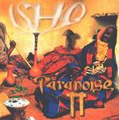

| Artist: | Paranoise |
| Title: | Ishq |
| Label: | Ancient Records |
| Length(s): | 63 minutes |
| Year(s) of release: | 2001 |
| Month of review: | [11/2001] |
| 1) | A Call To The Enlightened Ones/habiba Jaahratini | 4.30 |
| 2) | Occurence Current/wedding Song | 4.40 |
| 3) | Ishq | 5.23 |
| 4) | I Own | 6.30 |
| 5) | Mondanabosh/Quacida An-Nabi | 6.30 |
| 6) | A Dance With The Other/Jajouka Black Eyes | 4.32 |
| 7) | History's Fractal Mountain | 4.28 |
| 8) | I'm A User/pilentzee Pee | 4.07 |
| 9) | Superimposition/Kafi | 3.41 |
| 10) | Overmind Over Matter/Allah Maula Ali Dam Dam | 6.55 |
| 11) | Heliocentric Strum/helalisa | 4.34 |
| 12) | Have More/Kyaumba Dance/metahistorical Disquisition | 8.26 |
Female choirs and melodies from the Middle-East make up the next track, Occurrence Current/Wedding Song. The violin and rough guitar playing give the song its rock feel, the rest gives it a world music feel. Up to now, I have heard few bands who can incorporate the two so well. Plenty of tempo changes in this one and we can always count on plenty of drive.
One might compare the title track with Tempest, but with world music instead of English folk influences. The music is very organic and rather hectic and energetic.
The next track opens with spoken words after which the music very catchy. Easy to singalong with this one and again the melodies are good. The vocals are a combination of African and Arabic styles. The rhythm section is heavy, the groove is good.
Mondanabosh/Quacida An-Nabi is rather percussive, but not without diminishing the melody. The song is quite relaxed in a way, but the vocals still manage to make it sound quite "full". A Dance With The Other/Jajouka Black Eyes is a catchy rock song with female harmonies.
History's Fractal Mountain has quite a bit of spoken words and I soon got irritated with the whine of the guy's voice. The vocals sound a bit like the throatsinging of Nepalese monks. The music is less important than the message it seems.
By comparison, I'm A User/Pilentzee Pee is very Western like: a noisy guitar, plain vocals, accessible and appealing. Superimposition/Kafi has really a lot of bass. There are even some country influences in this track and it all sounds rather frolic.
Overmind Over Matter/Allah Maula Ali Dam Dam not only has a very nice title, but also clear percussion with some nice stereo effects, and some rather nervous violin, making the song sound rather Gypsy like.
Heliocentric strum/helalisa continues the fiddle domination and closer Have more/Kyaumba Dance/Metahistorical Disquisition features Noam Chomsky on propaganda. The song has an active bass and is in fact quite funky and fast. The final part is synthy and a bit spooky.